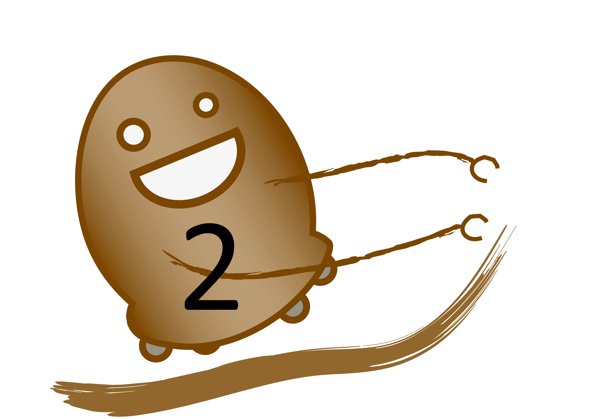
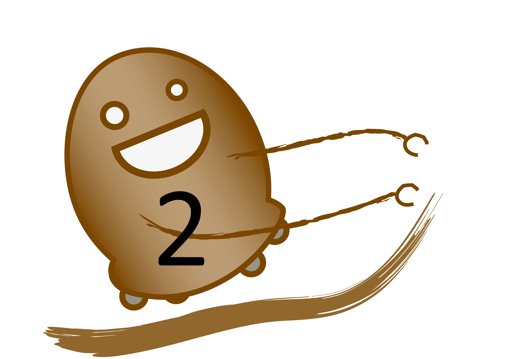
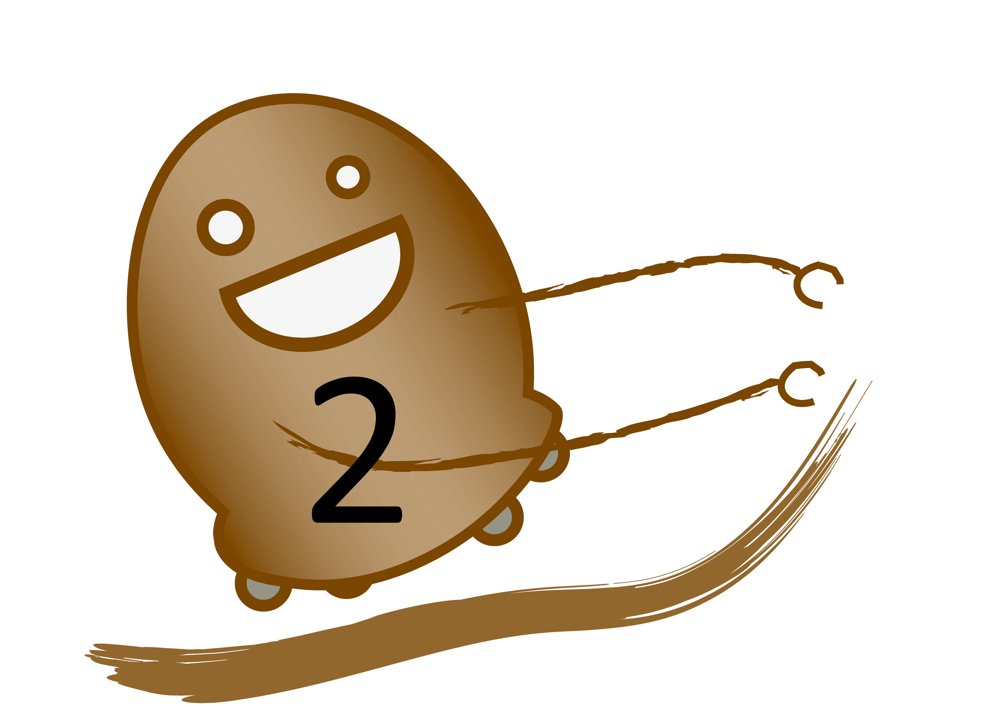

Je joue lorsqu'il y a 5 pommes.
Je joue lorsqu'il y a 5 pommes.Je joue lorsqu'il y a 4 pommes.
 Je joue lorsqu'il y a 3 pommes.
Je joue lorsqu'il y a 2 pommes.
Je joue lorsqu'il y a 3 pommes.
Je joue lorsqu'il y a 2 pommes.Dans ce mode tu as plusieurs robots. Ils décident à ta place combien ils veulent
prendre de pommes et tu dois juste prendre les pommes à leur place,
comme dans le mode précédent.
Ici,les robots jouent en fonction du nombre de
pommes restantes sur la table
Je joue lorsqu'il y a 5 pommes.Je joue lorsqu'il y a 3 pommes.
Je joue lorsqu'il y a 2 pommes.